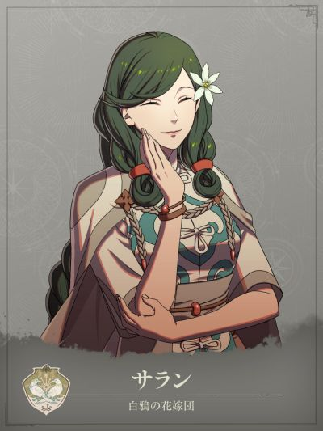

COMPANION DOSSIER
莎兰
サラン · 白鸦新娘团
检索别名：莎兰
喜欢什么，送什么
「爱下厨的人」用品、茶
喜欢的东西：美食、酒、社交
查看送礼原文与例外 →第一部 · 各路线加入条件
- 凯伊线
- —
- 迪托利希线
- 3S / 10R ・阿纳托莉娅外传 ・わかった → サラミス国 → ダ・ミナ → 座礁した巨大船
- 赛奥朵拉线
- —
- 蕾达线
- 3S / 8R ・阿纳托莉娅外传 ・わかった → サラミス国 → ダ・ミナ → 座礁した巨大船
S = 支援等级 · R = 名声等级 · — = 无法招募
查看招募原文与附加说明 →交涉要准备什么
外传＋选项わかった → サラミス国 → ダ・ミナ → 座礁した巨大船
先完成阿纳托莉娅外传，再依次选择“明白了、萨拉米斯国、达·米纳、搁浅的巨船”。仅迪托利希线、蕾达线可招募。
适用：迪托利希线 / 蕾达线
GameWith · 莎兰资料 ↗攻略来源交叉参考 · 未作游戏内实测
怎么养，怎么转职
编辑培养建议
白魔治疗／步兵位移后支援
- 前期
- 迪托利希／蕾达线完成阿纳托莉娅外传并实际招募后，先沿现有白魔术承担治疗，不必退回初级重练。队伍已有法比奥、索绯雅等治疗时，先补位移与邻接支援；把训练留给当前缺口，避免重复投入。
- 中期
- 低投入以白B备考主教：白魔法次数加倍，治疗友军时回复量+10，适合继续单修白魔。Lv35「注意唤起+」使相邻友军速度+4；安排在主力旁时仍要检查敌方射程，不为加速把治疗者暴露在集火内。
- 后期目标
- 第三部考试开放后，白A的贤者延续白魔次数加倍并将治疗加成提高到+15。想兼用枪再考虑圣枪师：需额外练枪A，保留白魔、治疗+10及次数加倍；只有确有枪系用途才追加投入，不把另修黑B当成白魔路线必经步骤。
- 考试与解锁
- 先满足本线支援、名声、外传与问答，凯伊／赛奥朵拉线不能套用此招募培养。主教需上级票证，贤者／圣枪师需最上级票证；另留枪术训练、武器及补考预算，Rank按备考目标而非保证通过写。
- 取舍与限制
- 学会并装备「引き寄せ」后，步兵状态可把自己与相邻友军向后移一格，不能用于大型单位；个人技能允许接着使用辅助魔法，不是任意再行动或再攻击。先看退后落点及剩余咒文次数。圣枪师精通「不退架势」的防御力+5只在满HP战斗时生效，受伤后不能继续按满血承伤计算。
这些是阶段性培养方向，并非必须逐级转职的固定链。适用难度及版本未做独立实测；优先满足当前队伍缺口。
本次新增条目经过来源页面核对，未逐项游戏内实测。没有补充明细的“交涉”仍待核验，不表示没有额外要求。